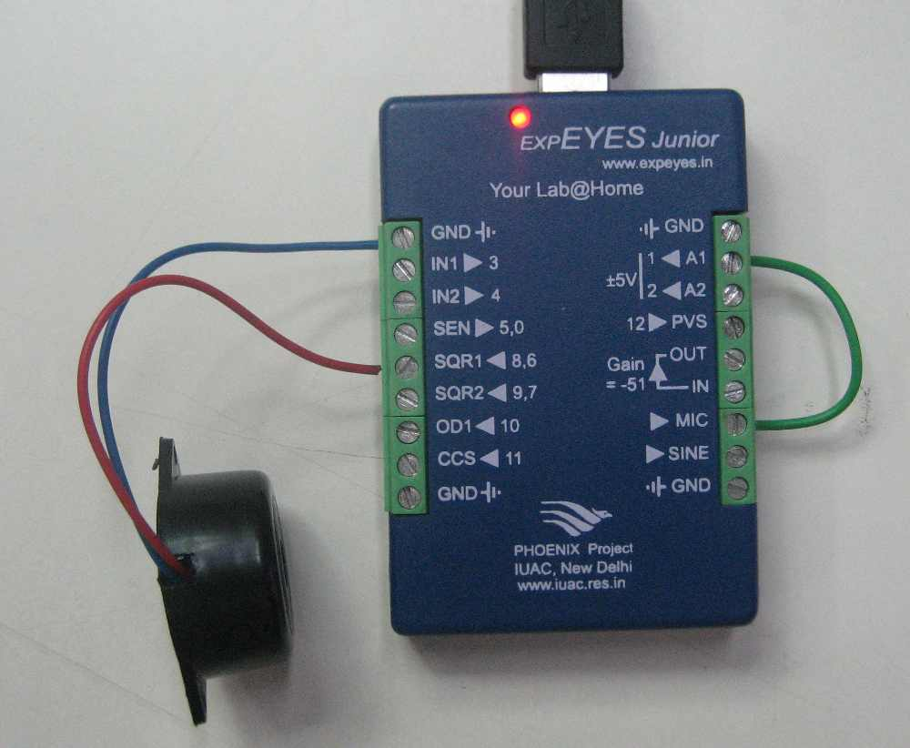

expEYES Junior has a biult-in microphone, whose amplified output appears on terminal marked MIC. This can be used for capturing sound signals and measuring their frequency. For demonstration, use the Piezo buzzer connected to SQ1 to generate sound.
 Â